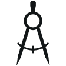

<div id="map-tool" class="map-tools">
    <div class="col-xs-12">
        <div class="mobile-map-tools-hide">
            &lt;
        </div>
        <div class="row">
            <label :class="{'border' : true, 'img-check' : true, 'check': tools.measure, 'measure-radio' : true }">
                <input type="checkbox" name="chk1" id="item1" value="measure" v-model="tools.measure"
                    class="hidden" autocomplete="off">
                
                <span>Measure</span>
            </label>


            <label :class="{'border' : true, 'img-check' : true, 'check': tools.markLocation, 'marklocation-radio' : true }">
                <input type="checkbox" name="chk2" id="item2" value="mark_location" v-model="tools.markLocation"
                    class="hidden" autocomplete="off">
                
                <span>Mark Location</span>
            </label>


            <label :class="{'border' : true, 'img-check' : true, 'check': tools.customWaypoint, 'waypoint-radio' : true }">
                <input type="checkbox" name="chk3" id="item3" value="custom_waypoint"
                    v-model="tools.customWaypoint" class="hidden" autocomplete="off">
                
                <span>Add Waypoint</span>
            </label>


            <label :class="{'border' : false, 'img-check' : true, 'check': tools.tripTracking , 'track-radio':true }">
                <input type="checkbox" name="chk4" id="item4" value="trip_tracking" v-model="tools.tripTracking"
                    class="hidden" autocomplete="off">
                
                <span>{{ tripTrackingToolLabel }}</span>
            </label>

        </div>

    </div>
</div>